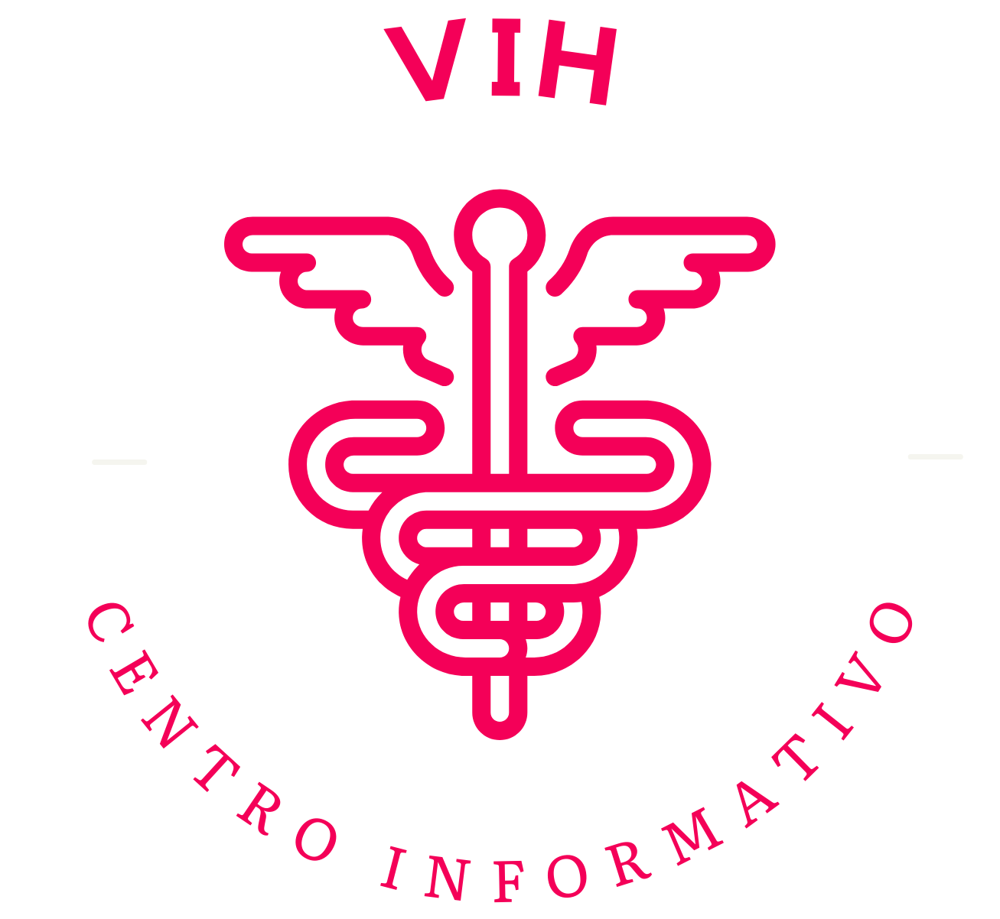

ORIGEN
Historia
El VIH sida se originó en el continente africano a inicios del siglo XIX, bajo la caza de mandriles, el consumo de estos animales dio los síntomas de fiebre, gripa, nauseas entre otras fueron los síntomas desapercibidos de esta sigilosa infección, siendo margen del origen del VIH.

SINTOMAS
Algunas personas infectadas con el VIH pueden experimentar una enfermedad similar a la gripe de 2 a 4 semanas después de la infección. Esto se conoce como infección primaria o aguda del VIH y puede durar unas pocas semanas. Los síntomas pueden incluir fiebre, dolor de cabeza, dolor muscular y articular, erupción cutánea, dolor de garganta, llagas en la boca, ganglios linfáticos inflamados (especialmente en el cuello), diarrea, pérdida de peso, tos y sudores nocturnos. Estos síntomas pueden ser leves y pasar desapercibidos, pero durante esta etapa la carga viral en el torrente sanguíneo es alta, lo que facilita la propagación de la infección.
Poligamia
La poligamia fue uno de los principales comportamientos de esparcimientos del SIDA, En el continente Africano, aunque África es el continente con más población en el mundo, La poligamia no ha sido disuelta, siendo también los prostíbulos puntos rojos de Brotes del SIDA, El margen de contagio se presenta bajo el no uso de protecciones en el acto, sin embargo el brote no comienza con el que adquiere de estos servicios de prostíbulo, sino cuando lleva el virus y lo traspasa al resto de su familia siendo índices de contagiar con decenas de personas en el mundo
Africa
“La prostitución en África es tan brutal como pueda serlo en otros continentes, tal como lo es en Asia o en América, pero atiende a otros factores que sí son propios del continente africano. La discriminación y el uso del cuerpo de la mujer es, en esta ocasión, no solo un método de ocasionar beneficios a una industria del sexo o a las mafias de trata de personas, sino que además es la base piramidal de una estructura defenestrada por problemas estructurales derivados de causas colonialistas, conflictos armados internos, religiosos, culturales o sanitarios”.(Mujeres en lucha/ 2019) la prostitución en África es el primer continente con más actividad en la prostitución desde los siglos.
.
ORIGEN
El VIH ha sido una enfermedad descubierta por medio de los años 1800,”La infección por el VIH en los seres humanos provino de un tipo de chimpancé de África Central. Los estudios muestran que el VIH pudo haber pasado de los chimpancés a los seres humanos a finales de los años 1800”.(CDC - 2022). La enfermedad se pudo transmitir por el consume de la carne de estos animales, quienes estaban infectados con su sangre. Aunque áfrica comenzó lentamente, la malaria y la sida, que son enfermedades principales que son causales del paso de los años acortando la vida de su población, la poligamia es una tipo de relación aceptada en África, del poder de un hombre tener de una esposa a más de una incluyendo tener relaciones fuera de sus mujeres.
MISION
Ante este problema no ha tenido solución por la cura, pero un amplio control para una vida más sana, es por lo tanto que realizaremos este centro de información para cumplir con nuestro objetivo general que es informar, dar control a vidas y calidad.
.